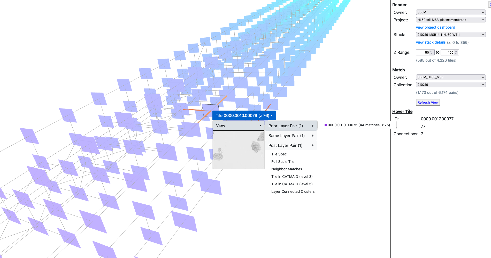
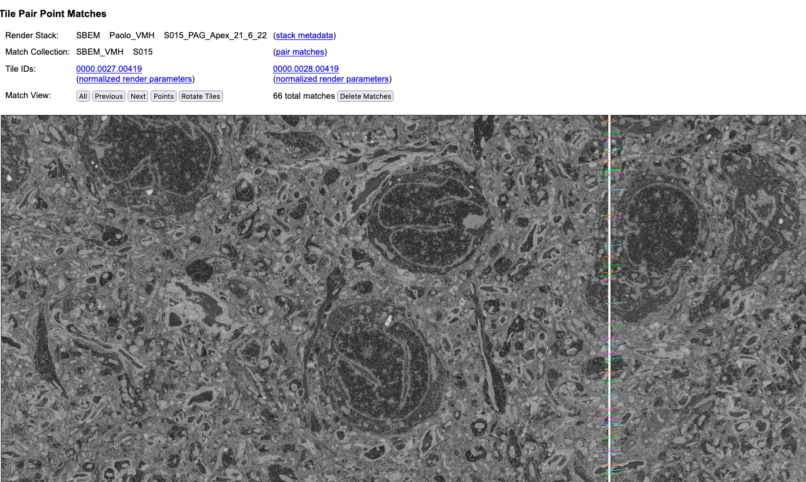

Ergebnis
Perfekt aligniertes Volumen; Next-Gen FileFormat (NGFF) = OME-Zarr
https://webknossos.org/datasets/l4dense_motta_et_al_demo-5f33d5340100001800e8cddc/view#3623,3883,1792,0,1.3
Kontakt:
image.sc
Erreichbarkeit der Entwickler?
Architektur


Render web services
Render web services
Dash
Python framework for interactive data apps
workflow


Backend Code
Python API für Render (API und client Scripts)
Python Paket zur Anwendung
Launcher für lokale, HPC, Spark
Use case
JuPyter NB gebastelt , läuft, static filenames (check?)
Variablen nach oben, Funktions-Wrap
Kommandozeile wäre schön (argparse), Validierung?
Einbetten in andere Module, argparse-Code?
Parameter für Batch-Processing? (JSON)